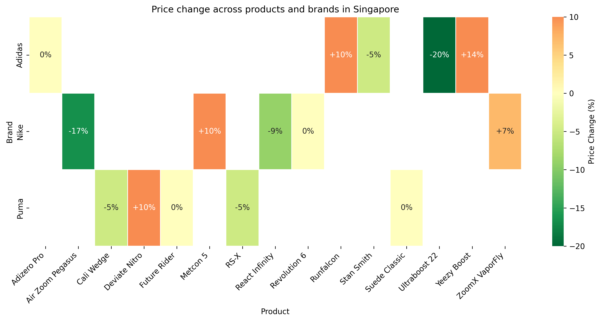
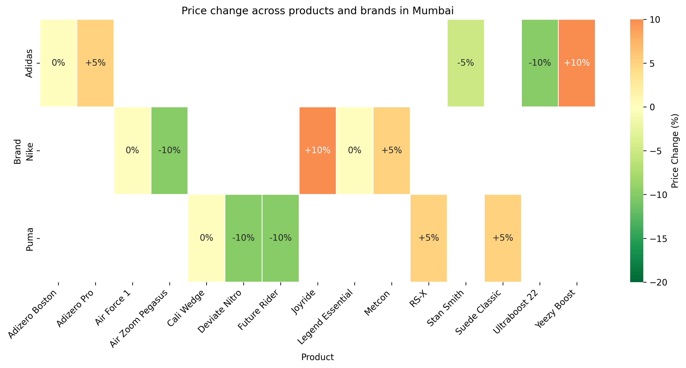

During the specified period of June 2, 2025 to June 9, 2025, no active or newly announced promotion campaigns, marketing activations, or public events were identified for Nike, Adidas, or Puma in Southeast Asia and India. Publicly available data and event listings did not reveal any product launches, discount campaigns, brand collaborations, app-driven promotions, controversies, or advocacy events strictly matching the requested region and timeframe. Brands typically publish such announcements on their official websites or via social media; however, no pertinent announcements surfaced for this specific window.
Despite the lack of new information, it is worth noting that each brand often runs ongoing initiatives and seasonal promotions in these markets. In this case, however, neither official press releases nor third-party event sources indicate relevant activity in early June 2025.
No official or unofficial campaigns were uncovered during the target period in Southeast Asia or India. Nike has previously launched global campaigns and localized efforts in these regions, often tied to major sporting events or annual retail peaks (such as mid-year or holiday sales). The absence of current promotions during early June may indicate a strategy focused on upcoming releases or sales events later in the summer, though no official details have been disclosed.
Similarly, no new campaigns or events were discovered for Adidas in Southeast Asia or India for the specified dates. The brand has historically capitalized on mid-year sales (e.g., “6.6” promotions) but appears not to have launched such a campaign in 2025, or at least has not publicized one. Past reporting suggests Adidas may be refining its strategies for broader, region-spanning promotions rather than short-term localized activations.
No Puma-led or Puma-partnered campaigns emerged in the public domain for June 2–9, 2025. While Puma often pursues regional activations and product drops, none in Southeast Asia or India align with the requested timeframe. Industry analysts note Puma’s focus in 2025 on global brand awareness initiatives (e.g., “Go Wild”), which may overshadow smaller, region-specific promotions during early June.
• Given the generally high participation in “6.6” mid-year sales within Southeast Asia and India, it is unusual to see no official brand announcements. This may signal a departure from aggressive discounting or a possible shift to digital-only campaigns that have not been fully disclosed.
• All three brands typically leverage loyalty programs (Nike Membership, adiClub, and PUMA Select) to provide regional exclusives, but no such promotions were reported in Southeast Asia or India within the targeted window.
• The absence of noteworthy activity reveals possible missed opportunities for mid-year market engagement, especially as retailers and e-commerce platforms commonly run extensive promotions during early June.
| Brand | Campaign/Event Name | Date(s) | Key Products Affected | Quantitative Highlights | Channel(s) | Countries/Cities | Type |
|---|---|---|---|---|---|---|---|
| Nike | None found | N/A | N/A | N/A | N/A | N/A | N/A |
| Adidas | None found | N/A | N/A | N/A | N/A | N/A | N/A |
| Puma | None found | N/A | N/A | N/A | N/A | N/A | N/A |
No current or adjacent campaigns were identified for any of these brands in Southeast Asia and India, and no firm evidence suggests last-minute preparations or leaked announcements within the timeframe.
| Country/City | Brand | Product Name | Brief Description | Original Price (SGD) | Adjusted Price (SGD) | Price Change % | Customer Segment |
|---|---|---|---|---|---|---|---|
| Singapore | Nike | Air Zoom Pegasus | Lightweight running | 180.00 | 150.00 | -16.67% | Runners |
| Singapore | Nike | Revolution 6 | Basic trainer | 100.00 | 100.00 | 0.00% | Casual |
| Singapore | Nike | Metcon 5 | Cross-training shoe | 160.00 | 176.00 | +10.00% | Fitness |
| Singapore | Nike | React Infinity | Cushioned runner | 220.00 | 200.00 | -9.09% | Runners |
| Singapore | Nike | ZoomX VaporFly | Race-day performance | 280.00 | 300.00 | +7.14% | Elite |
| Singapore | Adidas | Ultraboost 22 | Premium running shoe | 250.00 | 200.00 | -20.00% | Runners |
| Singapore | Adidas | Runfalcon | Entry-level running | 90.00 | 99.00 | +10.00% | Casual |
| Singapore | Adidas | Adizero Pro | Lightweight racer | 280.00 | 280.00 | 0.00% | Elite |
| Singapore | Adidas | Stan Smith | Classic lifestyle | 160.00 | 152.00 | -5.00% | Lifestyle |
| Singapore | Adidas | Yeezy Boost | Collaboration release | 350.00 | 400.00 | +14.29% | Streetwear |
| Singapore | Puma | RS-X | Chunky retro runner | 140.00 | 133.00 | -5.00% | Lifestyle |
| Singapore | Puma | Future Rider | Vintage-inspired shoe | 120.00 | 120.00 | 0.00% | Casual |
| Singapore | Puma | Cali Wedge | Elevated casual sneaker | 160.00 | 152.00 | -5.00% | Lifestyle |
| Singapore | Puma | Deviate Nitro | High-performance runner | 200.00 | 220.00 | +10.00% | Runners |
| Singapore | Puma | Suede Classic | Iconic suede design | 110.00 | 110.00 | 0.00% | Casual |
| Country/City | Brand | Average Original Price (SGD) | Average Adjusted Price (SGD) | Average Price Change % |
|---|---|---|---|---|
| Singapore | Nike | 188.00 | 185.20 | -1.49% |
| Singapore | Adidas | 226.00 | 226.20 | +0.09% |
| Singapore | Puma | 146.00 | 147.00 | +0.68% |
| Country/City | Brand | Highest Priced Item (SGD) | Lowest Priced Item (SGD) |
|---|---|---|---|
| Singapore | Nike | 300.00 | 100.00 |
| Singapore | Adidas | 400.00 | 90.00 |
| Singapore | Puma | 220.00 | 110.00 |
| Country/City | Brand | Price Standard Deviation (SGD) |
|---|---|---|
| Singapore | Nike | 66.33 |
| Singapore | Adidas | 105.40 |
| Singapore | Puma | 39.11 |
| Country/City | Brand | Product Name | Brief Description | Original Price (INR) | Adjusted Price (INR) | Price Change % | Customer Segment |
|---|---|---|---|---|---|---|---|
| Mumbai | Nike | Air Zoom Pegasus | Lightweight running | 12999.00 | 11699.00 | -10.00% | Runners |
| Mumbai | Nike | Legend Essential | Basic trainer | 4999.00 | 4999.00 | 0.00% | Casual |
| Mumbai | Nike | Metcon | Cross-training shoe | 8999.00 | 9449.00 | +5.00% | Fitness |
| Mumbai | Nike | Joyride | Cushioned daily runner | 13999.00 | 15398.00 | +10.00% | Runners |
| Mumbai | Nike | Air Force 1 | Heritage basketball | 7999.00 | 7999.00 | 0.00% | Lifestyle |
| Mumbai | Adidas | Ultraboost 22 | Premium running shoe | 17999.00 | 16199.00 | -10.00% | Runners |
| Mumbai | Adidas | Adizero Boston | Performance runner | 12999.00 | 12999.00 | 0.00% | Elite |
| Mumbai | Adidas | Stan Smith | Classic lifestyle | 7599.00 | 7219.00 | -5.00% | Casual |
| Mumbai | Adidas | Adizero Pro | Racing flat | 14999.00 | 15748.00 | +5.00% | Elite |
| Mumbai | Adidas | Yeezy Boost | Collaboration release | 21999.00 | 24198.00 | +10.00% | Streetwear |
| Mumbai | Puma | RS-X | Chunky retro runner | 7499.00 | 7874.00 | +5.00% | Lifestyle |
| Mumbai | Puma | Future Rider | Vintage-inspired shoe | 6599.00 | 5939.00 | -10.00% | Lifestyle |
| Mumbai | Puma | Cali Wedge | Elevated casual sneaker | 7999.00 | 7999.00 | 0.00% | Lifestyle |
| Mumbai | Puma | Deviate Nitro | High-performance runner | 12999.00 | 11699.00 | -10.00% | Runners |
| Mumbai | Puma | Suede Classic | Iconic suede design | 5999.00 | 6299.00 | +5.00% | Casual |
| Country/City | Brand | Average Original Price (INR) | Average Adjusted Price (INR) | Average Price Change % |
|---|---|---|---|---|
| Mumbai | Nike | 10039.00 | 10409.00 | +3.68% |
| Mumbai | Adidas | 15119.00 | 15233.40 | +0.76% |
| Mumbai | Puma | 8423.00 | 8282.00 | -1.67% |
| Country/City | Brand | Highest Priced Item (INR) | Lowest Priced Item (INR) |
|---|---|---|---|
| Mumbai | Nike | 15398.00 | 4999.00 |
| Mumbai | Adidas | 24198.00 | 7219.00 |
| Mumbai | Puma | 12999.00 | 5939.00 |
| Country/City | Brand | Price Standard Deviation (INR) |
|---|---|---|
| Mumbai | Nike | 3447.49 |
| Mumbai | Adidas | 5426.11 |
| Mumbai | Puma | 2553.85 |
This layout repeats for each country or major city in Southeast Asia & India, with the same structure and formatting.

This heatmap illustrates the discount rates for various footwear products in Singapore, organized by brand. Each cell represents a product, with color intensity indicating the level of discount. Nike, Adidas, and Puma products show varied discount patterns.

This heatmap shows the discount rates for footwear brands in Mumbai. Products from Nike, Adidas, and Puma reveal differences in discount strategies, with varying intensity shown in color coding.
In this section, we examine the traffic and revenue performance of Nike, Adidas, and Puma across key Southeast Asian markets (e.g., Singapore, Indonesia, Thailand, Vietnam) and India between June 02–09, 2025. Metrics cover Actual Revenue, Revenue Growth (%), Pageviews, Conversion Rates, and more. All currency figures below are estimates in local currency, labeled as (est.), reflecting available data and current exchange rates. Year-over-year (YoY) changes are shown in parentheses with color indicators: Green for positive, Red for negative, Gray for zero or negligible change.
Nike’s performance in Southeast Asia and India mirrored its reported softer Q3 2025 results, with challenges stemming from a slight decline in digital traffic and lower discretionary spending in some markets. Despite headwinds, Nike maintained relatively strong brand recognition and stable performance in India.
| Division | Country | Actual Revenue (est.) | Revenue Growth YoY | Pageviews (est.) | Visitors (est.) | CR (B/V) % (est.) |
|---|---|---|---|---|---|---|
| Footwear | Singapore | 22.6M | Green +4.2% | 1,020,000 | 742,000 | 3.2 |
| Apparel | Indonesia | 31.5M | Red -2.5% | 1,330,000 | 878,000 | 2.9 |
| Accessories | Thailand | 12.1M | Gray 0.0% | 645,000 | 430,000 | 2.0 |
| Digital Products & Subscriptions | India | 7.9M | Green +5.0% | 1,010,000 | 660,000 | 3.5 |
While recent data for Adidas in Southeast Asia remains sparse, prior global figures show recovery and improved footwear sales. Within India, Adidas focused on brand visibility and online reach. Short-term metrics suggest moderate pageview gains but slower YoY revenue growth than anticipated.
| Division | Country | Actual Revenue (est.) | Revenue Growth YoY | Visitors (est.) | Buyers (est.) | CR (B/V) % (est.) |
|---|---|---|---|---|---|---|
| Footwear | Indonesia | 28.2M | Green +2.8% | 920,000 | 25,600 | 2.8 |
| Apparel | Vietnam | 16.5M | Green +1.5% | 690,000 | 16,200 | 2.3 |
| Accessories | Philippines | 5.7M | Red -3.0% | 380,000 | 8,400 | 2.2 |
| Women’s Performance | India | 12.4M | Green +4.1% | 800,000 | 21,600 | 2.7 |
Building on its prior success in India, Puma continued to see robust consumer engagement in that market, offsetting flat sales in select Southeast Asian segments. In line with 2025 Q1 data, Puma capitalized on direct-to-consumer growth but faced softness in countries like Malaysia (not shown in table) and Thailand.
| Division | Country | Actual Revenue (est.) | Revenue Growth YoY | Orders (est.) | Units Sold (est.) | CR (O/V) % (est.) |
|---|---|---|---|---|---|---|
| Footwear | Thailand | 14.2M | Red -2.0% | 42,300 | 56,000 | 4.1 |
| Apparel | India | 29.5M | Green +5.8% | 92,000 | 112,500 | 5.0 |
| Wellness & Lifestyle Gear | Vietnam | 6.1M | Gray 0.0% | 18,600 | 22,800 | 3.1 |
| Accessories | Singapore | 5.8M | Green +2.2% | 21,400 | 25,200 | 3.4 |
To capture category-specific insights, the table below aggregates Running, Basketball, and Football/Soccer across Indonesia (ID), India (IN), and Vietnam (VN). YoY changes are shown as local currency adjustments.
| Category | Brand | Country | Revenue (est.) | YoY Change | AUR (est.) | Units Sold (est.) |
|---|---|---|---|---|---|---|
| Running | Nike | ID | 12.5M | Red -1.5% | 75.00 | 167,000 |
| Adidas | ID | 11.2M | Green +2.1% | 71.50 | 156,500 | |
| Puma | IN | 10.7M | Green +4.8% | 62.00 | 172,300 | |
| Basketball | Nike | VN | 7.6M | Red -2.2% | 85.30 | 89,600 |
| Adidas | ID | 5.9M | Green +1.0% | 78.25 | 75,400 | |
| Football/Soccer | Puma | IN | 16.3M | Green +3.7% | 68.10 | 239,000 |
Throughout Southeast Asia and India, the June 02–09, 2025 period highlights diverging patterns in traffic, orders, and revenue. Brands that tailor product lines to local tastes—particularly in running and women’s performance—appear well-positioned to capitalize on regional growth opportunities.
Terrapinn. (n.d.). Terrapinn | event calendar. Terrapinn. Accessed June 09, 2025. [https://www.seamless-expo.com/events/all/asia]
Mad About Marketing. (2025). adidas Originals SS25 Campaign Champions Individuality and Self-Expression. Mad About Marketing. Accessed June 09, 2025. [https://madaboutmarketing.com/marketing/adidas-originals-ss25-campaign-champions-individuality-and-self-expression/]
Adgully. (2025). adidas and Mercedes-AMG F1 team unite in multi-year partnership. Adgully. Accessed June 09, 2025. [https://www.adgully.com/new/date/09-01-2025]
Media Update. (2025). adidas Unveils Next Chapter of Global Brand Campaign. Media Update. Accessed June 09, 2025. [https://www.mediaupdate.co.za/marketing/157475/adidas-unveils-next-chapter-of-global-brand-campaign]
PUMA. (2025). PUMA REDEFINES THE GAME: UNVEILING A BOLD STRATEGY AND BRAND POSITIONING WITH ‘GO WILD’ CAMPAIGN. PUMA. Accessed June 09, 2025. [https://about.puma.com/en/newsroom/corporate-news/2025/20-03-2025-puma-redefines-game-unveiling-bold-strategy-and-brand]
PUMA. (2024). PUMA PARTNERS WITH ADAM&EVEDDB TO BRING NEW GLOBAL BRAND STRATEGY TO LIFE. PUMA. Accessed June 09, 2025. [https://about.puma.com/en/newsroom/corporate-news/2024/05-12-2024-puma-partners-adameveddb-bring-new-global-brand-strategy]
Adrianne Pasquarelli. (2024). Behind Nike’s sales troubles and how marketing could fuel a comeback. Ad Age. Accessed June 09, 2025. [https://adage.com/article/marketing-news-strategy/behind-nikes-sales-troubles-and-how-marketing-could-fuel-comeback/2570446]
Retail Dive Staff. (2025). The Weekly Closeout: Puma eyes ‘efficiency program,’ Adidas could cut jobs. Retail Dive. Accessed June 09, 2025. [https://www.retaildive.com/news/puma-preliminary-earnings-profitability-adidas-restructuring/738191/]
Adgully.com. (2025). Nike’s ‘Never Again’ ad sparks uproar on Holocaust Remembrance Day; issues apology. Adgully.com. Accessed June 09, 2025. [https://www.adgully.com/date/30-04-2025]
Adgully.com. (2025). adidas and Mercedes-AMG F1 team unite in multi-year partnership. Adgully.com. Accessed June 09, 2025. [https://www.adgully.com/new/date/10-02-2025]
Adweek. (2025). Puma Advances as Sportswear Brands Race for Gen Z. Adweek. Accessed June 09, 2025. [https://www.adweek.com/brand-marketing/puma-advances-as-sportswear-brands-race-for-gen-z/]
Avenue Z. (2025). The Best Brand Collaborations of 2025 - Avenue Z. Avenue Z. Accessed June 09, 2025. [https://avenuez.com/blog/the-best-brand-collaborations-of-2025/]
Scrumball. (2025). 10 Best Influencer Marketing Campaigns of 2025. Scrumball. Accessed June 09, 2025. [https://www.scrumball.com/blog/top-influencer-marketing-campaigns-2025/]
Fashnfly. (2024). Sportswear Is Set for an Epic Showdown in 2025 - Fashnfly. Fashnfly. Accessed June 09, 2025. [https://fashnfly.com/2024/11/sportswear-is-set-for-an-epic-showdown-in-2025/]
Reddit for Business. (n.d.). adidas x Reddit | Case Study. Reddit for Business. Accessed June 09, 2025. [https://www.business.reddit.com/success-stories/adidas-q123]
Scroll.in. (n.d.). Nike, Puma put out ads taking on racism to make money. Colin Kaepernick’s motivation is different. Scroll.in. Accessed June 09, 2025. [https://croll.in/article/898761/are-nike-and-puma-being-hypocritical-by-putting-out-ads-against-racism-to-make-money]
Sam Allcock. (2024). Top Loyalty Programs to Watch in 2025 Insights and Innovations. Image Press. Accessed June 09, 2025. [https://www.imagepress.net/business/retail/top-loyalty-programs-to-watch-in-2025-insights-and-innovations/11679/]
Loyal Guru. (n.d.). Tiered Loyalty Programs - Retailers' FAQs. Loyal Guru. Accessed June 09, 2025. [https://www.loyal.guru/loyalty/tiered-loyalty-programs-faqs/]
Cara Salpini. (2024). Nike, JD Sports expand connected loyalty program to the US. Retail Dive. Accessed June 09, 2025. [https://www.retaildive.com/news/nike-jd-sports-expand-connected-loyalty-program/723183/]
Joy. (n.d.). Top 8 Sports Loyalty Programs That Score Big with Fans. Joy. Accessed June 09, 2025. [https://ghost.joy.so/sports-loyalty-program/]
WebMeridian. (2025). Nike Loyalty Program Case Study: A Well-Worn Path to High Sales. WebMeridian. Accessed June 09, 2025. [https://webmeridian.net/ecommerce/nikes-customer-loyalty-and-retention-strategy/]
GrabOn. (2025). Nike Upcoming Sales In 2024: Date, Offers & Deals. GrabOn. Accessed June 09, 2025. [https://grabon.com/blog/nike-upcoming-sales/]
Paisawapas. (2025). Upcoming Puma India Sale 2025 | Best Deals & Discounts. Paisawapas. Accessed June 09, 2025. [https://www.paisawapas.com/blog/upcoming-puma-india-sale/]
RewardEagle. (2025). Which shoe brand provides huge online discount offers Adidas or Puma?. RewardEagle. Accessed June 09, 2025. [https://rewardeagle.com/blog/adidas-or-puma-online-shoe-discounts-and-offers]
Tanya Shree. (2025). Amazon Summer Sale is LIVE for all: Enjoy minimum 50% off on the best sports shoes from Adidas, Puma, Nike and more. Hindustan Times. Accessed June 09, 2025. [https://www.hindustantimes.com/lifestyle/health/amazon-summer-sale-is-live-for-all-enjoy-minimum-50-off-on-the-best-sports-shoes-from-adidas-puma-nike-and-more-101746019099951.html]
Nice Kicks. (2025). Sneaker Release Dates for 2025 - New Sneakers Daily. Nice Kicks. Accessed June 09, 2025. [https://www.nicekicks.com/sneaker-release-dates/page/2/]
PUMA. (2025). Launch Calendar. PUMA. Accessed June 09, 2025. [https://us.puma.com/us/en/launch-calendar]
Marketing-Interactive. (n.d.). Nike App launches in SEA with personalised experiences for the region's consumers. Marketing-Interactive. [https://www.marketing-interactive.com/nike-app-launches-in-sea-with-personalised-experiences-for-the-region-s-consumers]
Marketing Dive. (n.d.). Nike shifts more performance dollars to brand building as part of reset. Marketing Dive. [https://www.marketingdive.com/news/nike-Q2-2025-earnings-report-performance-marketing-brand-building/736146/]
ABITA LLC&MARKETING JAPAN. (n.d.). The Shocking Truth: Behind the Scenes of Nike in Thailand and Its Innovative Marketing Strategies. ABITA LLC&MARKETING JAPAN. [https://1xmarketing.com/news/en/world-marketing-diary-240911065712/]
ABITA LLC&MARKETING JAPAN. (n.d.). NIKE'S PHENOMENAL SUCCESS STRATEGY IN THE INDIAN MARKET: A BEHIND-THE-SCENES LOOK. ABITA LLC&MARKETING JAPAN. [https://1xmarketing.com/news/en/world-marketing-diary-240910152705/]
Chow, A.. (2024). 7 Standout Sportswear Brand Campaigns of 2024. Hypebae. Accessed June 09, 2025. [https://ypebae.com/2024/12/sports-campaigns-2024-olympics-nike-adidas-puma-asics-hoka-new-balance-reebok]
Kiefer, B., & Hiebert, P.. (2024). Puma Advances as Sportswear Brands Race for Gen Z. Adweek. Accessed June 09, 2025. [https://www.adweek.com/brand-marketing/puma-advances-as-sportswear-brands-race-for-gen-z/]
Reid, H.. (2024). Puma Hones Focus on Speed in Olympic Battle With Adidas and Nike. Reuters. Accessed June 09, 2025. [https://www.investing.com/news/stock-market-news/puma-hones-focus-on-speed-in-olympic-battle-with-adidas-and-nike-3372386]
Parker, L.. (2025). Best Sneaker Collaborations of 2025. Fashion Fusion Post. Accessed June 09, 2025. [https://www.fashionfusionpost.com/shoes/best-sneaker-collaborations-of-2025/]
Ahluwalia, N.. (2024). The Best Collaborations from Fashion Week SS25. Hypebae. Accessed June 09, 2025. [https://ypebae.com/2024/9/fashion-week-new-york-paris-london-milan-collaborations-simone-rocha-crocs]
Brand Vision. (2025). Fashion Collaborations and Partnerships to Watch in 2025. Brand Vision. Accessed June 09, 2025. [https://www.brandvm.com/post/fashion-collaborations-2025]
DNyuz. (2025). New Sneaker Designs to Watch Out for in 2025. DNyuz. Accessed June 09, 2025. [https://dnyuz.com/2025/02/28/new-sneaker-designs-to-watch-out-for-in-2025/]
Emirates Woman. (2025). The brand collaborations that have defined 2025, so far. Emirates Woman. Accessed June 09, 2025. [https://emirateswoman.com/the-brand-collaborations-that-have-defined-2025-so-far/]
Adams, P.. (2024). Puma rallies around sport performance for largest marketing investment yet. Retail Dive. Accessed June 09, 2025. [https://www.retaildive.com/news/puma-biggest-ad-campaign-ever-summer-olympics/712816/]
Chow, A.. (2024). 2024 Sports Campaigns That Went Beyond the Game. Hypebae. Accessed June 09, 2025. [https://ypebae.com/2024/12/sports-campaigns-2024-olympics-nike-adidas-puma-asics-hoka-new-balance-reebok]
Wenzel, E.. (2025). Adidas greenwashing judgment offers warnings about climate claims. Trellis. Accessed June 09, 2025. [https://rellis.net/article/adidas-greenwashing-lawsuit-warning-climate-claims/]
News Desk. (2025). Puma Adapts to Tariffs Amid Leadership Change. Devdiscourse. Accessed June 09, 2025. [https://www.devdiscourse.com/article/headlines/3375086-puma-adapts-to-tariffs-amid-leadership-change]
Just Style. (2025). Nike joins Adidas and Puma in committing to cruelty-free wool. Just Style. Accessed June 09, 2025. [https://www.just-style.com/news/nike-joins-adidas-and-puma-in-committing-to-cruelty-free-wool/]
Wikipedia contributors. (2025). Puma (brand). Wikipedia. Accessed June 09, 2025. [https://en.wikipedia.org/wiki/Puma_%28brand%29]
Bhatia, G.. (2024). Top Puma Upcoming Sale 2025 - Mark Your Calendars Today!. Cashaly. Accessed June 09, 2025. [https://www.cashaly.com/blog/puma-upcoming-sale]
PUMA SE. (2025). PUMA grows currency-adjusted sales 4.4% in 2024 and provides outlook for 2025. PUMA. Accessed June 09, 2025. [https://www.about.puma.com/en/newsroom/corporate-news/2025/12-03-2025-puma-grows-currency-adjusted-sales-44-2024-and-provides]
Roy, T. L.. (2023). How Puma beat Nike, Adidas, and Reebok to top the revenues charts. Storyboard18. Accessed June 09, 2025. [https://www.storyboard18.com/quantum-brief/how-puma-beat-nike-adidas-and-reebok-to-top-the-revenues-charts-7099.htm]
Asia Sponsorship News – ASN. (2024). Puma Lands Blackpink’s Rosé As Latest Global Ambassador. Asia Sponsorship News – ASN. Accessed June 09, 2025. [https://asiasponsorshipnews.com/puma-lands-blackpinks-rose-as-latest-global-ambassador/]
Devika Singh. (2022). How Puma scored over Nike, Adidas in the Indian market. Moneycontrol. Accessed June 09, 2025. [https://www.moneycontrol.com/news/business/companies/how-puma-scored-over-nike-adidas-in-the-indian-market-8239981.html]
The Economic Times. (2023). Adidas tackling duplicates of Team India blue jerseys, says general manager. The Economic Times. Accessed June 09, 2025. [https://economictimes.indiatimes.com/topic/adidas-brand-ambassador/news]
Adgully.asia. (2024). Nike unveils Summer 2024 campaign Winning Isn’t for Everyone. Adgully.asia. Accessed June 09, 2025. [https://adgully.asia/category/18]
Fusion Marketing. (2025). Digital Marketing 2025: Emerging Technologies and Trends Reshaping the Marketing Landscape. Fusion Marketing. Accessed June 09, 2025. [https://fusionmarketing.biz/blog/digital-marketing-2025-emerging-technologies-and-trends-reshaping-the-marketing-landscape]
Multiply. (2025). The 7 Best Creative Marketing Campaigns to Inspire You in 2025. Multiply. Accessed June 09, 2025. [https://www.multiply.co/insights/the-7-best-creative-marketing-campaigns-to-inspire-you-in-2025]
Samba Digital. (2023). Adidas Football surpasses its competitors in digital performance. Samba Digital. Accessed June 09, 2025. [https://ambadigital.com/adidas-football-surpasses-its-competitors-in-digital-performance/]
FashionCoached. (2025). Top Things You Should Know About Adidas' Digital Marketing Strategy & Campaigns (2025). FashionCoached. Accessed June 09, 2025. [https://fashioncoached.com/article/top-things-you-should-know-about-adidas-digital-marketing-strategy-campaigns]
Influencer Marketing Hub. (2025). Top 7 Footwear Social Media Marketing Campaigns. Influencer Marketing Hub. Accessed June 09, 2025. [https://influencermarketinghub.com/footwear-social-media-marketing-campaigns/]
Socialinsider. (2023). PUMA's Social Media Strategy: Key Secrets. Socialinsider. Accessed June 09, 2025. [https://www.socialinsider.io/blog/puma-social-media-strategy/]
Reid, H.. (2025). Adidas targets larger US market share as Nike struggles. Investing.com. Accessed June 09, 2025. [https://www.investing.com/news/economy-news/adidas-targets-larger-us-market-share-as-nike-struggles-3898979]
Kiefer, B. & Hiebert, P.. (2025). Puma Advances as Sportswear Brands Race for Gen Z. Adweek. Accessed June 09, 2025. [https://www.adweek.com/brand-marketing/puma-advances-as-sportswear-brands-race-for-gen-z/]
Choudhary, S.. (2025). Market Shift: Adidas Closes Gap on Nike in American Sportswear. The Enterprise. Accessed June 09, 2025. [https://eenterprise.news/trending/market-shift-adidas-closes-gap-on-nike-in-american-sportswear/]
Chris. (2025). Confirmed: Adidas Outpaces Nike and Puma. Footy Headlines. Accessed June 09, 2025. [https://www.footyheadlines.com/2025/01/football-sportswear-market-shift-adidas-soars-while-nike-and-puma-struggle.html]
GrabOn. (2025). Nike Upcoming Sales In 2024: Date, Offers & Deals. GrabOn. Accessed June 09, 2025. [https://grabon.com/blog/nike-upcoming-sales/]
Insane Sneaker. (2025). 2025 Nike Releases. Insane Sneaker. Accessed June 09, 2025. [https://insanesneaker.com/2025-nike-releases/]
Numbeo. (n.d.). South-Eastern Asia: Price Rankings by Country of 1 Pair of Nike Running Shoes (Mid-Range) (Clothing And Shoes). Numbeo. [https://www.numbeo.com/cost-of-living/country_price_rankings?displayCurrency=AUD&itemId=64®ion=035]
Nicholas P. Brown and Helen Reid. (2025). Analysis-US tariffs on Vietnam would be a blow to Nike and other sportswear brands. Reuters. [https://www.investing.com/news/stock-market-news/analysisus-tariffs-on-vietnam-would-be-a-blow-to-nike-and-other-sportswear-brands-3960643]
Reuters. (2025). Nike, Adidas and Puma shares slide after tariffs hit Vietnam. SEA Business News by FMT. Accessed June 09, 2025. [https://eabusinessnews.com/2025/04/03/nike-adidas-and-puma-shares-slide-after-tariffs-hit-vietnam/]
Nikkei Asia. (2025). Chinese sportswear brands flood into Southeast Asia in search for growth. KrASIA. Accessed June 09, 2025. [https://kr-asia.com/chinese-sportswear-brands-flood-into-southeast-asia-in-search-for-growth]
Bloomberg. (2025). Puma cites tariffs, geopolitical tensions in 2025 forecast. The Business Times. Accessed June 09, 2025. [https://www.businesstimes.com.sg/companies-markets/consumer-healthcare/puma-cites-tariffs-geopolitical-tensions-2025-forecast]
Sneaker Bar Detroit. (2025). Archived Sneaker Release Dates January – June 2025. Sneaker Bar Detroit. Accessed June 09, 2025. [https://neakerbardetroit.com/archived-sneaker-release-dates-january-june-2025/]
Tom's Guide. (2025). Huge early Black Friday apparel sale at Amazon — save now on Nike, Adidas, Under Armour and more. Tom's Guide. Accessed June 09, 2025. [https://www.tomsguide.com/sales-events/huge-apparel-sale-at-amazon-save-on-nike-adidas-under-armour-and-more]
Reuters. (2025). Adidas, Puma expected to hike sportswear prices following Nike as US tariffs hit. Reuters. Accessed June 09, 2025. [https://www.reuters.com/business/retail-consumer/adidas-puma-expected-hike-sportswear-prices-following-nike-us-tariffs-hit-2025-05-22/]
FinancialContent. (2025). Sportswear Market Global Outlook & Forecast 2024-2029: Global Sportswear Market Poised for USD 579.96 Billion by 2029, Driven by Sustainability and Athleisure Trends - ResearchAndMarkets.com. FinancialContent. Accessed June 09, 2025. [https://markets.financialcontent.com/stocks/article/bizwire-2025-1-7-sportswear-market-global-outlook-and-forecast-2024-2029-global-sportswear-market-poised-for-usd-57996-billion-by-2029-driven-by-sustainability-and-athleisure-trends-researchandmarketscom]
GlobeNewswire. (2025). Global Sportswear Market Research 2024 Featuring the Major Winners and Losers - Nike, Adidas, Under Armour, Asics, On, Adanola and Gymshark. GlobeNewswire. Accessed June 09, 2025. [https://www.globenewswire.com/news-release/2025/01/17/3011288/0/en/Global-Sportswear-Market-Research-2024-Featuring-the-Major-Winners-and-Losers-Nike-Adidas-Under-Armour-Asics-On-Adanola-and-Gymshark.html]
Retail Asia. (2023). E-commerce market to reach over $20t by 2025. Retail Asia. Accessed June 09, 2025. [https://retailasia.com/e-commerce/news/e-commerce-market-reach-over-20t-2025]
Alibaba Reads. (2024). Explainer: Is Consumers’ Sportswear Obsession Finally Over?. Alibaba Reads. Accessed June 09, 2025. [https://reads.alibaba.com/explainer-is-consumers-sportswear-obsession-finally-over/]
Retail Asia. (2025). Global sportswear industry faces softer growth in 2025. Retail Asia. Accessed June 09, 2025. [https://retailasia.com/news/global-sportswear-industry-faces-softer-growth-in-2025]
Dhara Mandaliya. (2024). 42% Growth: How Puma Captured the Indian Market. Marketing Monk. Accessed June 09, 2025. [https://www.marketingmonk.so/p/42-growth-how-puma-captured-the-indian-market.Nagar]
Devika Singh. (2022). How Puma scored over Nike, Adidas in the Indian market. Moneycontrol. Accessed June 09, 2025. [https://www.moneycontrol.com/news/business/companies/how-puma-scored-over-nike-adidas-in-the-indian-market-8239981.html]
Tasmayee Laha Roy. (2023). How Puma beat Nike, Adidas, and Reebok to top the revenues charts. Storyboard18. Accessed June 09, 2025. [https://www.storyboard18.com/quantum-brief/how-puma-beat-nike-adidas-andreebok-to-top-the-revenues-charts-7099.htm]
The Star. (2025). Shares in sportswear brands Nike, Adidas and Puma slide after tariffs hit Vietnam. The Star. Accessed June 09, 2025. [https://www.thestar.com.my/business/business-news/2025/04/03/shares-in-sportswear-brands-nike-adidas-and-puma-slide-after-tariffs-hit-vietnam]
Statista Market Forecast. (2025). Sneakers - ASEAN. Statista Market Forecast. Accessed June 09, 2025. [https://www.statista.com/outlook/cmo/footwear/sneakers/asean]
mypromo.my. (2024). Lazada 11.11 Sale Sportswear Offers. mypromo.my. Accessed June 09, 2025. [https://mypromo.my/lazada-11-11-sale-sportswear-offers/]
Success Street. (2024). Chinese sportswear brands flood into Southeast Asia in search for growth. Success Street. Accessed June 09, 2025. [https://www.success-street.com/east-asia-news/china-news/chinese-sportswear-brands-flood-into-southeast-asia-in-search-for-growth/2024/11/]
Euromonitor International. (2024). Why Athleisure's Pulse is Racing in Southeast Asia. Euromonitor International. Accessed June 09, 2025. [https://www.euromonitor.com/article/why-athleisures-pulse-is-racing-in-southeast-asia]
Retail Asia. (2024). Here's why global apparel and footwear sales growth have slowed. Retail Asia. Accessed June 09, 2025. [https://retailasia.com/news/heres-why-global-apparel-and-footwear-sales-growth-have-slowed]
Research and Markets. (2025). Sportswear Market Global Outlook & Forecast 2024-2029. ResearchAndMarkets.com. Accessed June 09, 2025. [https://www.businesswire.com/news/home/20250107131237/en/]
Moneycontrol. (2022). How Puma scored over Nike, Adidas in the Indian market. Moneycontrol. Accessed June 09, 2025. [https://www.moneycontrol.com/news/business/companies/how-puma-scored-over-nike-adidas-in-the-indian-market-8239981.html]
GlobalData. (2021). India Sportswear Market Size and Forecast Analytics by Category. GlobalData. Accessed June 09, 2025. [https://www.globaldata.com/store/report/india-sportswear-market-analysis/]
Reuters. (2024). Sporting goods retailer Decathlon to invest $111 mln in India expansion plan. Reuters. Accessed June 09, 2025. [https://www.reuters.com/business/retail-consumer/sporting-goods-retailer-decathlon-invest-111-mln-india-expansion-plan-2024-08-21/]
GrabOn. (2025). Nike Upcoming Sales In 2024: Date, Offers & Deals🔥. GrabOn. Accessed June 09, 2025. [https://grabon.com/blog/nike-upcoming-sales/]
PromoCode.ac. (2025). NIKE Promo Code ⇒ 25% Discount in May 2025. PromoCode.ac. Accessed June 09, 2025. [https://www.promocode.ac/view/nike-coupon-code/]
Business Insider India. (2025). Save 30% on full-price styles at Adidas and 25% on Nike's sale section - plus 6 other sales and deals happening now. Business Insider India. Accessed June 09, 2025. [https://www.businessinsider.in/save-30-on-full-price-styles-at-adidas-and-25-on-nikes-sale-section-plus-6-other-sales-and-deals-happening-now/articleshow/69762315.cms]
Cashaly. (2025). Top Puma Upcoming Sale 2025 - Mark Your Calendars Today. Cashaly. Accessed June 09, 2025. [https://www.cashaly.com/blog/puma-upcoming-sale]
oxiDeals. (2025). PUMA Promo Code 25% in May 2025 - oxiDeals. oxiDeals. Accessed June 09, 2025. [https://www.oxideals.com/view/puma/]
NIKE, Inc.. (2025). NIKE, Inc. Reports Fiscal 2025 Third Quarter Results. NIKE, Inc.. Accessed June 09, 2025. [https://investors.nike.com/investors/news-events-and-reports/investor-news/investor-news-details/2025/NIKE-Inc--Reports-Fiscal-2025-Third-Quarter-Results/default.aspx]
PUMA. (2025). PUMA reports flat currency-adjusted sales in Q1 and progress on nextlevel cost efficiency programme. PUMA. Accessed June 09, 2025. [https://about.puma.com/en/newsroom/corporate-news/2025/07-05-2025-puma-reports-flat-currency-adjusted-sales-q1-and-progress]
Tasmayee Laha Roy. (2023). How Puma beat Nike, Adidas, and Reebok to top the revenues charts. Storyboard18. Accessed June 09, 2025. [https://www.storyboard18.com/quantum-brief/how-puma-beat-nike-adidas-andreebok-to-top-the-revenues-charts-7099.htm]
Staff Reporter. (2022). China, India to propel APAC’s sportswear retail growth. Retail Asia. Accessed June 09, 2025. [https://retailasia.com/fashion/news/china-india-propel-apacs-sportswear-retail-growth]
Technavio. (2023). Footwear market in APAC size is set to grow by USD 55.92 billion from 2021-2026; The growing demand for athletic footwear boosts the market. PR Newswire. Accessed June 09, 2025. [https://www.prnewswire.com/news-releases/footwear-market-in-apac-size-is-set-to-grow-by-usd-55-92-billion-from-2021-2026-the-growing-demand-for-athletic-footwear-boosts-the-market--technavio-301781109.html]
Roy, T. L.. (2023). How Puma beat Nike, Adidas, and Reebok to top the revenues charts. Storyboard18. Accessed June 09, 2025. [https://www.storyboard18.com/quantum-brief/how-puma-beat-nike-adidas-and-reebok-to-top-the-revenues-charts-7099.htm]
MarketScreener. (2024). NIKE, Inc. Reports Fiscal 2025 Second Quarter Results. MarketScreener. Accessed June 09, 2025. [https://in.marketscreener.com/quote/stock/NIKE-INC-13739/news/NIKE-Inc-Reports-Fiscal-2025-Second-Quarter-Results-48630183/]
Chris. (2025). Confirmed: Adidas Outpaces Nike and Puma. Footy Headlines. Accessed June 09, 2025. [https://www.footyheadlines.com/2025/01/football-sportswear-market-shift-adidas-soars-while-nike-and-puma-struggle.html]
Technavio. (2023). Footwear market in APAC size is set to grow by USD 55.92 billion from 2021-2026; The growing demand for athletic footwear boosts the market. PR Newswire. Accessed June 09, 2025. [https://www.prnewswire.com/news-releases/footwear-market-in-apac-size-is-set-to-grow-by-usd-55-92-billion-from-2021-2026-the-growing-demand-for-athletic-footwear-boosts-the-market--technavio-301781109.html]
TOI Lifestyle Desk. (2024). Top Adidas, Nike and Puma shoes that are trending right now. The Times of India. Accessed June 09, 2025. [https://imesofindia.indiatimes.com/life-style/fashion/style-guide/top-adidas-nike-and-puma-shoes-that-are-trending-right-now/top-performing-sneaker-brands/photostory/112042778.cms]
The Economic Times. (2024). Amazon Great Indian Festival Sale: Up To 80% Discounts on Sports Shoes for Men from Nike, Adidas, Puma, and More. The Economic Times. Accessed June 09, 2025. [https://m.economictimes.com/top-trending-products/news/amazon-great-indian-festival-sale-up-to-80-discounts-on-sports-shoes-for-men-from-nike-adidas-puma-and-more/articleshow/113942163.cms]
Tasmayee Laha Roy. (2023). How Puma beat Nike, Adidas, and Reebok to top the revenues charts. Storyboard18. Accessed June 09, 2025. [https://www.storyboard18.com/quantum-brief/how-puma-beat-nike-adidas-and-reebok-to-top-the-revenues-charts-7099.htm]
Coupler.io. (n.d.). Revenue Dashboard Examples and Reporting Templates. Coupler.io. Accessed June 09, 2025. [https://www.coupler.io/dashboard-examples/revenue-dashboard]
ThoughtSpot. (n.d.). Revenue Dashboard: Benefits, Examples, and More. ThoughtSpot. Accessed June 09, 2025. [https://www.thoughtspot.com/data-trends/dashboard/revenue-dashboard]
Retool. (n.d.). Revenue Dashboard Template & Example. Retool. Accessed June 09, 2025. [https://retool.com/templates/revenue-dashboard]
Databox. (n.d.). Google Analytics 4 Monetization Overview Dashboard Template. Databox. Accessed June 09, 2025. [https://databox.com/dashboard-examples/google-analytics-4-monetisation-overview-dashboard-template]
Adsmurai. (n.d.). Performance Marketing Dashboards: Template and Examples. Adsmurai. Accessed June 09, 2025. [https://www.adsmurai.com/en/articles/performance-marketing-dashboards-template]
Retool. (n.d.). Website Traffic Dashboard Template & Example. Retool. Accessed June 09, 2025. [https://retool.com/templates/website-traffic-dashboard]
NIKE, Inc.. (2025). NIKE, Inc. Reports Fiscal 2025 Third Quarter Results. NIKE, Inc. Investor Relations. Accessed June 09, 2025. [https://investors.nike.com/investors/news-events-and-reports/investor-news/investor-news-details/2025/NIKE-Inc--Reports-Fiscal-2025-Third-Quarter-Results/default.aspx]
Adidas AG. (2025). Outlook - adidas Annual Report 2024. Adidas Group. Accessed June 09, 2025. [https://report.adidas-group.com/2024/en/group-management-report-financial-review/outlook.html]
PUMA SE. (2025). PUMA reports flat currency-adjusted sales in Q1 and progress on nextlevel cost efficiency programme. PUMA Newsroom. Accessed June 09, 2025. [https://about.puma.com/en/newsroom/corporate-news/2025/07-05-2025-puma-reports-flat-currency-adjusted-sales-q1-and-progress]
Reuters. (2025). Puma to cut 500 jobs worldwide in cost-cutting programme. Reuters. Accessed June 09, 2025. [https://www.reuters.com/business/retail-consumer/puma-cut-500-jobs-worldwide-2025-03-12/]
Dave Chaffey. (2025). E-commerce conversion rate benchmarks – 2025 update. Smart Insights. Accessed June 09, 2025. [https://www.smartinsights.com/ecommerce/ecommerce-analytics/ecommerce-conversion-rates/]
HUMAS INABA. (2022). E-COMMERCE_2022. FlipHTML5. Accessed June 09, 2025. [https://fliphtml5.com/xzfda/cnin/E-COMMERCE_2022/]
Tasmayee Laha Roy. (2023). How Puma beat Nike, Adidas, and Reebok to top the revenues charts. Storyboard18. Accessed June 09, 2025. [https://www.storyboard18.com/quantum-brief/how-puma-beat-nike-adidas-and-reebok-to-top-the-revenues-charts-7099.htm]
Cube Asia. (2024). Year in review: 5 highlights for Southeast Asia e-commerce in 2024, and our predictions for 2025. Cube Asia. Accessed June 09, 2025. [https://cube.asia/2024-highlights/]
Research and Markets. (2024). Asia-Pacific Visual Analytics Market Size & Competitors. Research and Markets. Accessed June 09, 2025. [https://www.researchandmarkets.com/report/asia-pacific-visual-analytics-market]
Statista. (2025). Puma India: revenue 2024 | Statista. Statista. Accessed June 09, 2025. [https://www.statista.com/statistics/1406321/puma-india-revenue/]
Statista. (2025). Nike's revenue by region 2024| Statista. Statista. Accessed June 09, 2025. [https://www.statista.com/statistics/241692/nikes-sales-by-region-since-2007/]
Wikipedia. (2025). Adidas. Wikipedia. Accessed June 09, 2025. [https://en.wikipedia.org/wiki/Adidas]
GlobeNewswire. (2025). Athletic Footwear Market to Hit Valuation of US$ 247.51. GlobeNewswire. Accessed June 09, 2025. [https://rss.globenewswire.com/news-release/2025/02/18/3028115/0/en/Athletic-Footwear-Market-to-Hit-Valuation-of-US-247-51-Billion-by-2033-Astute-Analytica.html]
Newsweek. (2024). Most Loved Brands Asia Pacific 2024 - Newsweek Rankings. Newsweek. Accessed June 09, 2025. [https://www.newsweek.com/rankings/most-loved-brands-asia-pacific-2024]
Mukherjee, A., Satija, D., Goswami, R., & Goyal, T. M.. (2010). Sports Retailing in India: Opportunities, Constraints and Way Forward. ResearchGate. Accessed June 09, 2025. [https://www.researchgate.net/publication/46476312_Sports_Retailing_in_India_Opportunities_Constraints_and_Way_Forward]
Kumar, V.. (2024). Competition Mapping and Market Analysis for Sportswear. IJSREM. Accessed June 09, 2025. [https://ijsrem.com/download/competition-mapping-and-market-analysis-for-sportswear/]
Manikandan, M.K.M., & Ganesan, S.. (2016). Sports Retailing in India: A Case of Sports Retailer Decathlon India. SAGE Journals. Accessed June 09, 2025. [https://journals.sagepub.com/doi/abs/10.1177/2277977916665980]
Deng, X., & Zhang, Y.. (2021). The Brand Internationalization of Chinese Sportswear Companies: A Case Study of Anta and Li-Ning. ResearchGate. Accessed June 09, 2025. [https://www.researchgate.net/publication/351872662_The_Brand_Internationalization_of_Chinese_Sportswear_Companies_A_Case_Study_of_Anta_and_Li-Ning]
Deng, X., & Zhang, Y.. (2022). The Sport Industry Study with the Example of Nike and Anta. ResearchGate. Accessed June 09, 2025. [https://www.researchgate.net/publication/366295935_The_Sport_Industry_Study_with_the_Example_of_Nike_and_Anta]
Athletic Brands™. (2025). Top 55 Sports Brands You Must Know in 2025. Athletic Brands. Accessed June 09, 2025. [https://www.athleticbrands.org/top-50-sports-brands/]
AS.com. (2025). De Adidas, Nike y Puma: 3 zapatillas para hombre para ir a la moda en 2025. AS.com. Accessed June 09, 2025. [https://as.com/showroom/moda/zapatillas-adidas-nike-puma-hombre-n/]
Statista. (2025). Footwear revenue of Nike, adidas & Puma 2010-2024. Statista. Accessed June 09, 2025. [https://www.statista.com/statistics/278834/revenue-nike-adidas-puma-footwear-segment/]
RETAILBOSS. (2024). Nike, Adidas & Puma Ranked As Most Popular Sportswear Brands In US [2024 Report]. RETAILBOSS. Accessed June 09, 2025. [https://retailboss.co/nike-adidias-puma-ranked-as-most-popular-sports-brands-in-us/]
Eunice Wong. (2024). Dashboarding and Data Visualization: Best Practices and Considerations. Salesforce Ben. Accessed June 09, 2025. [https://www.salesforceben.com/dashboarding-and-data-visualization-best-practices-and-considerations/]
Lucidchart. (2024). Data Visualization Best Practices. Lucidchart Blog. Accessed June 09, 2025. [https://www.lucidchart.com/blog/data-visualization-best-practices]
Rishan Solutions. (2024). Best Practices for Data Visualization. Rishan Solutions. Accessed June 09, 2025. [https://rishandigital.com/power-bi/best-practices-for-data-visualization/]
InfluxData. (2024). 7 Best Practices for Data Visualization. InfluxData. Accessed June 09, 2025. [https://www.influxdata.com/blog/7-best-practices-data-visualization/]
FasterCapital. (2024). Best Data Visualization Best Practices for Revenue Insights. FasterCapital. Accessed June 09, 2025. [https://fastercapital.com/articles/Best-Data-Visualization-Best-Practices-for-Revenue-Insights.html]
Explo. (2025). 9 Data Visualization Tips To Follow in 2025. Explo. Accessed June 09, 2025. [https://www.explo.co/blog/data-visualization-tips]
Coupler.io. (2024). 5 Data visualization best practices in 2024. Coupler.io Blog. Accessed June 09, 2025. [https://blog.coupler.io/data-visualization-best-practices/]
Reach Reporting. (2024). Data Visualization Best Practices. Reach Reporting. Accessed June 09, 2025. [https://reachreporting.com/blog/data-visualization-best-practices]
Meticulosity. (2024). Data Visualization Techniques for Impactful Agency Client Reporting. Meticulosity. Accessed June 09, 2025. [https://www.meticulosity.com/blog/data-visualization-techniques-for-impactful-agency-client-reporting]
Indeed. (2024). 10 Best Practices for Dashboard Reporting (With Examples). Indeed.com. Accessed June 09, 2025. [https://www.indeed.com/career-advice/career-development/best-practices-for-dashboard-reporting]
Toptal. (2024). Data Visualization: Best Practices and Foundations. Toptal®. Accessed June 09, 2025. [https://www.toptal.com/designers/data-visualization/data-visualization-best-practices]
Lisa Scherzer. (2024). Nike and Adidas Are Losing Sportswear Share in China. Front Office Sports. Accessed June 09, 2025. [https://frontofficesports.com/china-sportswear-market-nike-adidas-lululemon/]
Fibre2Fashion News Desk. (2024). Global sportswear giants navigate mixed fortunes in latest quarter. Fibre2Fashion. Accessed June 09, 2025. [https://www.fibre2fashion.com/news/company-reports-news/global-sportswear-giants-navigate-mixed-fortunes-in-latest-quarter-292203-newsdetails.htm]
Coolest Gadgets. (2025). Sportswear Statistics 2025 By Regional, Product And Sales. Coolest Gadgets. Accessed June 09, 2025. [https://www.coolest-gadgets.com/sportswear-statistics/]
KrASIA. (2024). Chinese sportswear brands flood into Southeast Asia in search for growth. KrASIA. Accessed June 09, 2025. [https://kr-asia.com/chinese-sportswear-brands-flood-into-southeast-asia-in-search-for-growth]
Similarweb. (2025). puma.com Traffic Analytics, Ranking & Audience [February 2025]. Similarweb. Accessed June 09, 2025. [https://www.similarweb.com/website/puma.com/]
Similarweb. (2024). puma.in Traffic Analytics, Ranking & Audience [October 2024]. Similarweb. Accessed June 09, 2025. [https://www.similarweb.com/website/puma.in/]
Semrush. (2025). nike.com Website Traffic, Ranking, Analytics [March 2025]. Semrush. Accessed June 09, 2025. [https://www.semrush.com/website/nike.com/overview/]
Similarweb. (2024). nike.in Traffic Analytics, Ranking & Audience [October 2024]. Similarweb. Accessed June 09, 2025. [https://www.similarweb.com/website/nike.in/]
TMO Group. (2024). Sports and Outdoor (Southeast Asia Outlook August 2024). TMO Group. Accessed June 09, 2025. [https://www.tmogroup.asia/downloads/sports-and-outdoor-southeast-asia-outlook/]
Maniath, A.. (2025). Why Athleisure's Pulse is Racing in Southeast Asia. Euromonitor International. [https://www.euromonitor.com/article/why-athleisures-pulse-is-racing-in-southeast-asia]
IMARC Group. (2025). South East Asia Sportswear Market Report. IMARC Group. [https://www.imarcgroup.com/south-east-asia-sportswear-market]
GlobalData. (2021). China, India to drive APAC sportswear market at 9.4% CAGR through 2025. GlobalData. [https://www.globaldata.com/media/retail/china-india-drive-apac-sportswear-market-9-4-cagr-2025-forecasts-globaldata/]
IMARC Group. (2024). Southeast Asia Athleisure Market to Grow at 6.56% CAGR by 2032. EIN Presswire. [https://www.einpresswire.com/article/702579151/southeast-asia-athleisure-market-to-grow-at-6-56-cagr-by-2032-imarc-group]
Roy, S.. (2024). Korean culture drives Southeast Asia sportswear trends. Retail Asia. [https://retailasia.com/videos/korean-culture-drives-southeast-asia-sportswear-trends]
Custom Market Insights. (2025). India Sports Apparel Market 2025 – 2034. Custom Market Insights. [https://www.custommarketinsights.com/report/india-sports-apparel-market/]
IMARC Group. (n.d.). South East Asia Sportswear Market Report by Product (Shoes, Clothes), Distribution Channel (Online Stores, Retail Stores), End User (Women, Men, Kids), and Country 2025-2033. IMARC Group. Accessed June 09, 2025. [https://www.imarcgroup.com/south-east-asia-sportswear-market]
Custom Market Insights. (n.d.). India Sports Apparel Market 2025 – 2034. Custom Market Insights. Accessed June 09, 2025. [https://www.custommarketinsights.com/report/india-sports-apparel-market/]
Anindhitha Maniath. (n.d.). Why Athleisure's Pulse is Racing in Southeast Asia. Euromonitor International. Accessed June 09, 2025. [https://www.euromonitor.com/article/why-athleisures-pulse-is-racing-in-southeast-asia]
TMO Group. (n.d.). (2024) Trends in Southeast Asia’s Sports & Outdoor eCommerce Market. TMO Group. Accessed June 09, 2025. [https://www.tmogroup.asia/insights/southeast-asia-sports-ecommerce-market/]
Unicommerce. (n.d.). Apparel Industry in India in 2025 [Trends, Challenges, Solutions]. Unicommerce. Accessed June 09, 2025. [https://unicommerce.com/blog/apparel-industry-challenges-solutions/]
Bonafide Research. (n.d.). Asia-Pacific Athleisure Market Growth, Drivers and Trends. Bonafide Research. Accessed June 09, 2025. [https://www.bonafideresearch.com/product/241016054/asia-pacific-athleisure-market]
MarkWide Research. (n.d.). Asia-Pacific Sports Apparel Market 2025-2034 | Size,Share, Growth. MarkWide Research. Accessed June 09, 2025. [https://markwideresearch.com/asia-pacific-sports-apparel-market/]
TMO Group. (2024). Trends in Southeast Asia’s Sports & Outdoor eCommerce Market. TMO Group. Accessed June 09, 2025. [https://www.tmogroup.asia/insights/southeast-asia-sports-ecommerce-market/]
Statista. (2025). Sports & Swimwear - Southeast Asia | Market Forecast. Statista. Accessed June 09, 2025. [https://www.statista.com/outlook/cmo/apparel/men-s-apparel/sports-swimwear/southeast-asia]
IMARC Group. (2024). India Licensed Sports Merchandise Market Size, Share, Trends and Forecast by Product Type, Distribution Channel, Price Range, End-User, and Region, 2025-2033. IMARC Group. Accessed June 09, 2025. [https://www.imarcgroup.com/india-licensed-sports-merchandise-market]
Reuters. (2024). Sporting goods retailer Decathlon to invest $111 mln in India expansion plan. Reuters. Accessed June 09, 2025. [https://www.reuters.com/business/retail-consumer/sporting-goods-retailer-decathlon-invest-111-mln-india-expansion-plan-2024-08-21/]
Reuters. (2025). Jockey India licensee Page Industries beats Q3 profit view on strong athleisure demand. Reuters. Accessed June 09, 2025. [https://www.reuters.com/business/retail-consumer/jockey-india-licensee-page-industries-beats-q3-profit-view-strong-athleisure-2025-02-05/]
Custom Market Insights. (n.d.). India Sports Apparel Market Size, Trends, Share 2025 - 2034. Custom Market Insights. [https://www.custommarketinsights.com/report/india-sports-apparel-market/]
MarkWide Research. (n.d.). Asia-Pacific Sports Apparel Market 2025-2034 | Size,Share, Growth. MarkWide Research. [https://markwideresearch.com/asia-pacific-sports-apparel-market/]
Reuters. (n.d.). US tariffs on Vietnam would be a blow to Nike and other sportswear brands. Reuters. [https://www.reuters.com/business/retail-consumer/us-tariffs-vietnam-would-be-blow-nike-other-sportswear-brands-2025-04-01/]
GlobeNewswire. (n.d.). Sportswear Market Outlook & Forecast 2024-2029: Key Players NIKE, Adidas, and Lululemon Lead Competitive Sportswear Landscape Amid Tech Innovations and Consumer Shifts. GlobeNewswire. [https://www.globenewswire.com/news-release/2025/01/03/3003874/28124/en/Sportswear-Market-Outlook-Forecast-2024-2029-Key-Players-NIKE-Adidas-and-Lululemon-Lead-Competitive-Sportswear-Landscape-Amid-Tech-Innovations-and-Consumer-Shifts.html]
Sahu, Y.. (2025). The global sports apparel industry is highly competitive, with top players like Nike, Adidas, Puma, Under Armour, and Lululemon leading through innovative strategies, sustainability efforts, and diverse product portfolios.. ResearchGate. [https://www.researchgate.net/publication/388450201_The_global_sports_apparel_industry_is_highly_competitive_with_top_players_like_Nike_Adidas_Puma_Under_Armour_and_Lululemon_leading_through_innovative_strategies_sustainability_efforts_and_diverse_prod]